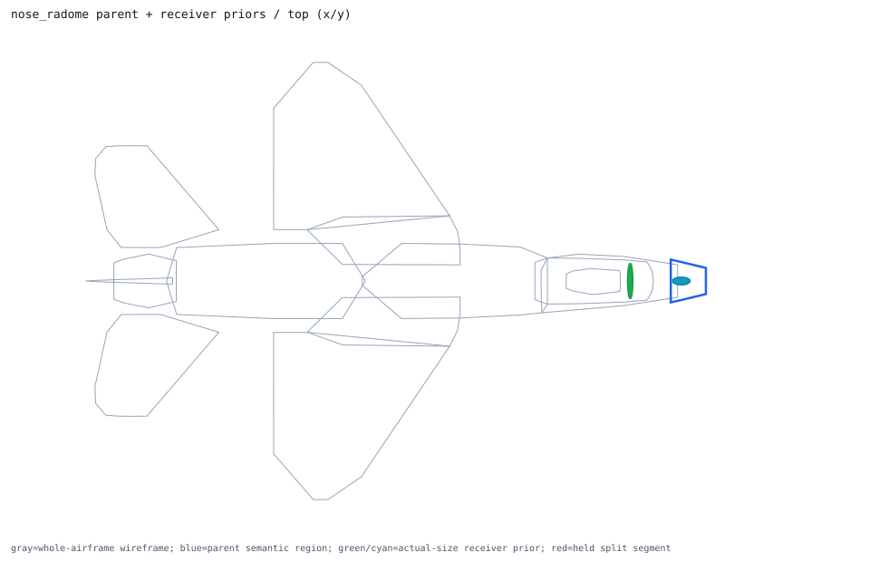
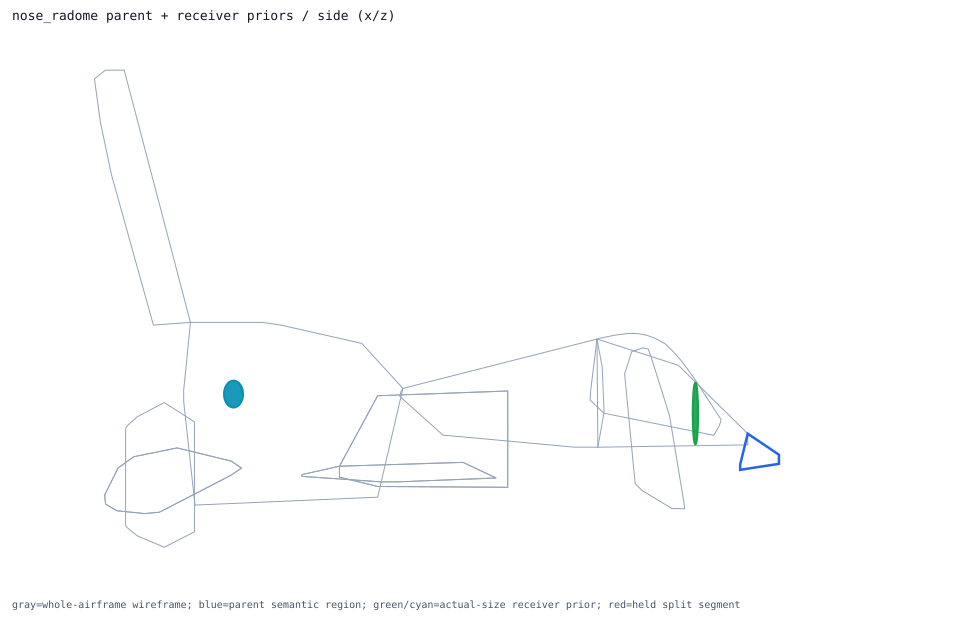
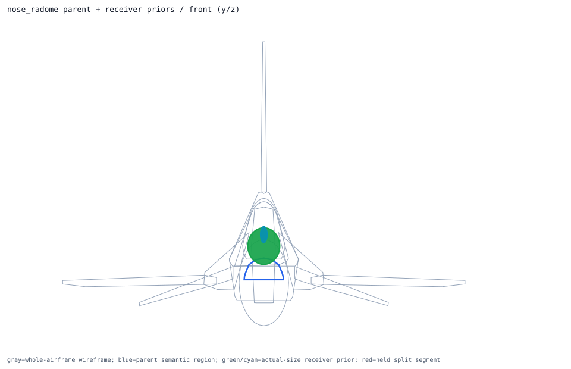

Back to parent-child layout index
semantic_nose_radome_volume
convex_hull parent -> nose_radome; receiver overlays 2; extra slots 1
Trace Details
- parent semantic component: semantic_nose_radome_volume
- parent surface component: surface_nose_radome
- outer model region: nose_radome
- volume role: radome_volume
- geometry primitive: convex_hull
- primary receiver: apg68_radar_array
- extra receivers: iff_interrogator
- cross-region held receivers: none
- external held split segments: none
- parent handoff: direct_receivers_parse_ready
- layout policy: one_parent_semantic_shell_view_with_receiver_priors_overlaid
- runtime projection: review_only_visual_layout_not_runtime_activation
- child overlays:
- primary_receiver_overlay: apg68_radar_array ellipsoid dims=[0.1016, 0.7366, 0.4826]m evidence=public_related_family_dimension_not_apg68_exact segments=0 -> already_inside_whole_airframe
- extra_receiver_overlay: iff_interrogator ellipsoid dims=[0.3683, 0.1524, 0.209804]m evidence=public_lru_dimension_related_f16_iff_family segments=0 -> placed_inside_airframe_exceeds_parent_shell_review
- external held segment overlays:


